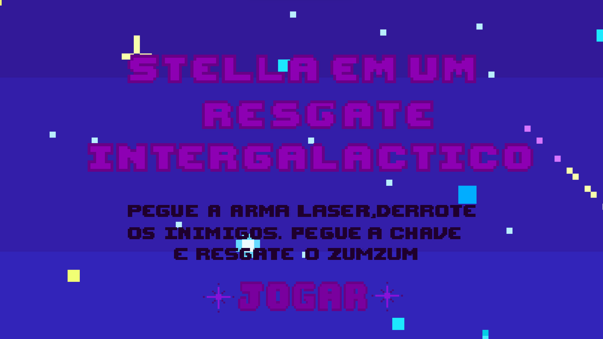
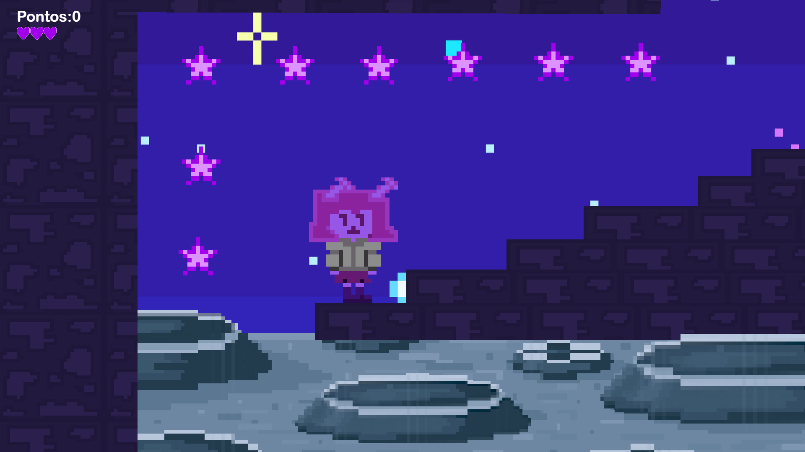
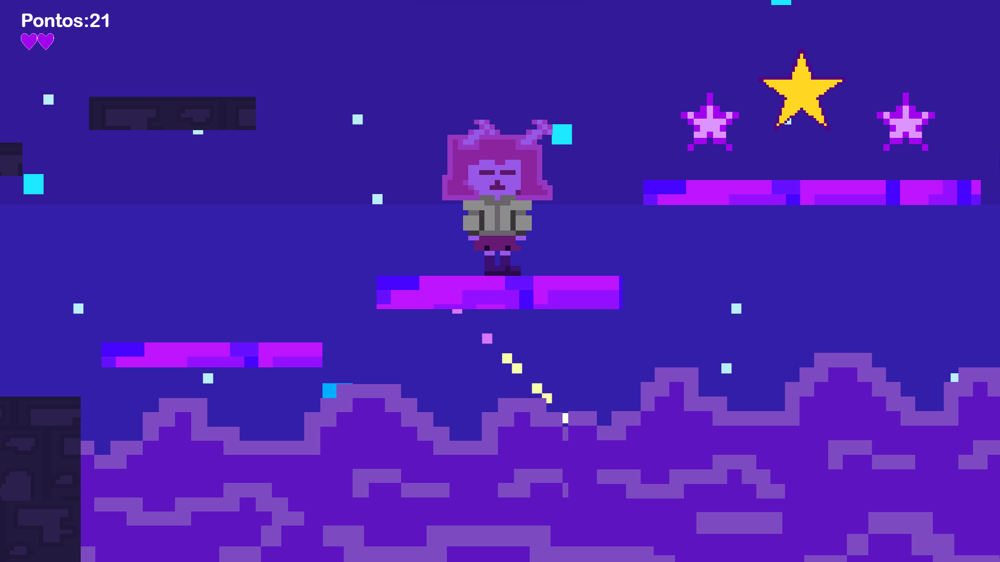

Projeto Integrador
Este webgame é o meu projeto integrador. Como todo trabalho que desenvolvemos no curso ele tem início, meio e fim. Passamos por várias etapas e aprendemos vários conhecimentos, não só nessa qualificação, mas todas as outras fazem parte do processo para chegarmos até aqui.
Stella em um Resgate Intergaláctico



Para acessar o jogo e poder jogar bastante clique no link abaixo:
Acesse o jogo com este link: Stella
História - Stella em um Resgate Intergaláctico
Ajude Stella a resgatar seu bichinho Zumzum. Encontre a arma laser para derrotar os inimigos, derrote todos encontre a chave e liberte o zumzum.